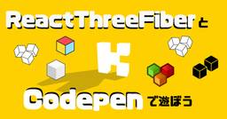
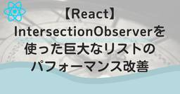
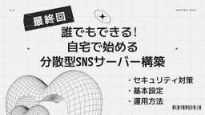

KENTEM TechBlog
https://tech.kentem.jp/
KENTEM(建設システム)の技術に関するブログです。
フィード

ReactThreeFiberとCodepenで遊ぼう
KENTEM TechBlog
この記事は、 KENTEM TechBlog アドベントカレンダー2024 20日目、12月20日の記事です。 こんにちは。KENTEMフロントエンドエンジニアのM.Sです。 3Dというのは人間を惹きつけるものがありますよね。 ゲームや映画から、ソフトウェアやWebサイトまで。 Webサイトで商品などをぐるぐる見渡せるエリアがあると、ついぐるぐるしてしまいます。 そこで今回は、普段Reactばかり触っている私でも3Dを扱うことができる、ReactThreeFiberについてご紹介していきたいと思います。 ReactThreeFiberとは？ インストール オブジェクトを表示してみる Orbit…
1時間前
Azure Cosmos DB のフルテキスト検索を試してみる
KENTEM TechBlog
この記事は、 KENTEM TechBlog アドベントカレンダー2024 19日目、12月19日の記事です。 こんにちは、第二開発部でバックエンドを担当している N.Y です。 2024/11/18-22 に開催された Microsoft Ignite 2024 で、Azure Cosmos DB （以下 Cosmos DB）のフルテキスト検索・ハイブリッド検索のプレビュー機能が発表されました。 今までは Cosmos DB でキーワード検索などを高速に行うためには Azure AI Search （以下 AI Search）を使用する必要がありましたが、Cosmos DB のみで高速な検索…
1日前

【React】IntersectionObserverを使った巨大なリストのパフォーマンス改善
KENTEM TechBlog
この記事は、 KENTEM TechBlog アドベントカレンダー2024 18日目、12月18日の記事です。 こんにちは。私は、KENTEMでWEBフロントエンドエンジニアをしています。 私の所属プロジェクトでは、Reactを採用しています。開発中、リスト内のアイテム数が多くなるにつれパフォーマンスが悪くなるという課題がありました。この記事では、IntersectionObserverを使って、巨大なリストのパフォーマンス改善を行う方法を紹介させていただきます。 どのようなリストか パフォーマンスの課題 Windowingは銀の弾丸ではなかった IntersectionObserverを使っ…
2日前
耳のお供に！お勧め『テック系Podcast』
KENTEM TechBlog
u{ text-decoration: none; background: linear-gradient(transparent 50%, yellow 50%) !important;} この記事は、 KENTEM TechBlog アドベントカレンダー2024 17日目、12月17日の記事です。 こんにちは、KENTEM第1開発部のD.Sです。 みなさん通学・通勤時間はどれくらいありますか？ 私は運動も兼ねて駅まで歩いているので1時間くらいあります。 そんな通学・通勤や運動、就寝前などに聴くとお勧めのPodcast(ポッドキャスト)番組を紹介します。 Podcast(ポッドキャスト)とは…
3日前
【GitHub Models】【GPT-4o】さくっとAI組み込みアプリ開発デビューしよう！
KENTEM TechBlog
この記事は、 KENTEM TechBlog アドベントカレンダー2024 16日目、12月16日の記事です。 皆さん普段の業務でAIは利用していますか？ ChatGPTの登場から早いもので二年が経過。 始めの頃は「すげー！AIが喋ってる！」と感動はしたものの、 ちょっと難しい質問をすると、「違う、そうじゃない」とサングラスの男性の顔がちらつく状態。 業務で頼りにするにはちょっと怪しいかなー？というのが正直な感想でした。 それから時間が経ち、GPT-3.5, GPT-3.5 Turbo, GPT-4, GPT-4o, GPT-4o mini... と様々なモデルが登場。 最近ではo1シリーズな…
4日前
State of KENTEM 2024！ 1
1
KENTEM TechBlog
この記事は、 KENTEM TechBlog アドベントカレンダー2024 15日目、12月15日の記事です。 アドベントカレンダーも折り返しとなってきました。日曜日ですので、ここで箸休めの記事を投稿したいと思います。 皆さんは新しい技術を選定する際、どのような基準で選んでいますか？ 私は選定基準の１つに「すぐに廃れないこと」を入れています。 多くの人に使われている技術は、壁に当たった時のノウハウも豊富に提供されているためです。 「広く使われているかどうか」を調べるのに参考になるのが、State of 〇〇 といったサイト群です。 State of CSS State of JavaScrip…
5日前
Bicep を使って Azure リソースを作ってみた
KENTEM TechBlog
この記事は、 KENTEM TechBlog アドベントカレンダー2024 14日目、12月14日の記事です。 Azure でサーバー管理を行っていて開発用に同じ環境を何度も作るのが嫌になる。作った環境の設定ミスに気づくのに時間がかかった。という経験はございませんか？ そんな私の様なあなたに Bicep をご紹介します。 Bicep とは Bicep と Terraform Bicep の利点 Terraform の利点 Bicep を使う準備 Bicep を作る 反省点 SQL 接続 API Management のサブスクリプションキー モジュール化 まとめ おわりに Bicep とは B…
6日前

【最終回】誰でもできる！自宅で始める分散型SNSサーバー構築 ─── Misskeyのセキュリティ対策、バックアップ方法、パフォーマンス向上、機能追加編【Misskey】 1
KENTEM TechBlog
この記事は、 KENTEM TechBlog アドベントカレンダー2024 13日目、12月13日の記事です。 みなさんこんにちは！ KENTEM第二開発部でフロントエンドを担当しているO・Aと申します😺 この記事では、一般家庭の要らなくなったPCを活用して、自宅で分散型SNS（Misskey）サーバーを構築する方法を、12/9～12/13の5日間に分けて、毎日丁寧に解説していきます。 シリーズ目次 第1回：分散型SNSとは何か？ tech.kentem.jp 第2回：Ubuntuの環境構築手順 tech.kentem.jp 第3回：ドメイン取得とCloudflare Tunnelの設定 te…
7日前

【第4回】誰でもできる！自宅で始める分散型SNSサーバー構築 ─── Misskeyインストール編【Misskey】
KENTEM TechBlog
この記事は、 KENTEM TechBlog アドベントカレンダー2024 12日目、12月12日の記事です。 みなさんこんにちは！ KENTEM第二開発部でフロントエンドを担当しているO・Aと申します😺 この記事では、一般家庭の要らなくなったPCを活用して、自宅で分散型SNS（Misskey）サーバーを構築する方法を、12/9～12/13の5日間に分けて、毎日丁寧に解説していきます。 シリーズ目次 第1回：分散型SNSとは何か？ tech.kentem.jp 第2回：Ubuntuの環境構築手順 tech.kentem.jp 第3回：ドメイン取得とCloudflare Tunnelの設定 te…
8日前
【第3回】誰でもできる！自宅で始める分散型SNSサーバー構築 ───ドメイン取得とCloudflare Tunnelの設定【Misskey】
KENTEM TechBlog
この記事は、 KENTEM TechBlog アドベントカレンダー2024 11日目、12月11日の記事です。 みなさんこんにちは！ KENTEM第二開発部でフロントエンドを担当しているO・Aと申します😺 この記事では、一般家庭の要らなくなったPCを活用して、自宅で分散型SNS（Misskey）サーバーを構築する方法を、12/9～12/13の5日間に分けて、毎日丁寧に解説していきます。 シリーズ目次 第1回：分散型SNSとは何か？ tech.kentem.jp 第2回：Ubuntuの環境構築手順 tech.kentem.jp 第3回：ドメイン取得とCloudflare Tunnelの設定 ←本…
9日前
【第2回】誰でもできる！自宅で始める分散型SNSサーバー構築 ─── Ubuntu環境構築編【Misskey】
KENTEM TechBlog
この記事は、 KENTEM TechBlog アドベントカレンダー2024 10日目、12月10日の記事です。 みなさんこんにちは！ KENTEM第二開発部でフロントエンドを担当しているO・Aと申します😺 この記事では、一般家庭の要らなくなったPCを活用して、自宅で分散型SNS（Misskey）サーバーを構築する方法を、12/9～12/13の5日間に分けて、毎日丁寧に解説していきます。 シリーズ目次 第1回：分散型SNSとは何か？ tech.kentem.jp 第2回：Ubuntuの環境構築手順 ←本記事 tech.kentem.jp 第3回：ドメイン取得とCloudflare Tunnelの…
10日前
【第1回】誰でもできる！自宅で始める分散型SNSサーバー構築 ─── 分散型SNSとは何か？【Misskey】
KENTEM TechBlog
この記事は、 KENTEM TechBlog アドベントカレンダー2024 9日目、12月9日の記事です。 みなさんこんにちは！ KENTEM第二開発部でフロントエンドを担当しているO・Aと申します😺 この記事では、一般家庭の要らなくなったPCを活用して、自宅で分散型SNS（Misskey）サーバーを構築する方法を、12/9～12/13の5日間に分けて、毎日丁寧に解説していきます。 シリーズ目次 第1回：分散型SNSとは何か？ ←本記事 tech.kentem.jp 第2回：Ubuntuの環境構築手順 tech.kentem.jp 第3回：ドメイン取得とCloudflare Tunnelの設定…
11日前
ブラウザで高度な画像処理をWebAssemblyを使って実験してみた
KENTEM TechBlog
この記事は、 KENTEM TechBlog アドベントカレンダー2024 8日目、12月8日の記事です。 寒い季節になりましたね。 先月頃までは気分よく外出もできたのですが、最近は寒さに負けて家にこもりっきりの日々です。 となると家での時間が増えてきましたので、久々にちょっとした実験でもやろうかなと思った次第です。 ということで、最近よく耳にするWebAssemblyを使って、ブラウザ上で高度な画像処理ができるようになったのかを実験してみました。 はじめて触る技術ですので、若干の曖昧さがありますが、温かく見守っていただけたらと思います。 WebAssembly（Wasm）とは WebAsse…
12日前
AI vs AI 生成した画像の分類をさせてみた
KENTEM TechBlog
この記事は、 KENTEM TechBlog アドベントカレンダー2024 7日目、12月7日の記事です。 🐱<突然ですが、問題です。 こちらの画像、実際に撮影されたものか、AIで生成したものか、どちらだと思いますか？ 自信を持って答えるのは難しいのではないでしょうか。 今回はこれをAIで見分けてやろうという内容です。 ちなみに正解は本記事の最後で発表します。 AIで画像を生成する 実際に撮影された画像を準備する AI vs AI 正解発表 おわりに AIで画像を生成する 最近すごく流行っていますよね。特に2次元の絵が大量に生成されている印象があります。その一方で、実際の風景のような画像を生成…
13日前
テックブログ運営の秘訣：TechBlog運営の1年半を振り返る
KENTEM TechBlog
この記事は、 KENTEM TechBlog アドベントカレンダー2024 6日目、12月6日の記事です。 KENTEMマネージャーです。当社のテックブログをはじめて1年半がたちました。 今回は、テックブログの運営を振り返り、工夫したポイントをご紹介します。 きっかけ：テックブログがない会社＝開発体験が悪い会社 文書力がない私は、会社テックブログを開設することについて、どちらかというとネガティブでしたが、下記の記事を見て考えを改めることになりました。 prtimes.jp 超巨大企業が上位にいる一方で、スタートアップや中小企業がランクインしています。 エンジニア体験をより良くするのは当然ですが…
14日前
C#における呼び出し元のメソッドの取得方法
KENTEM TechBlog
この記事は、 KENTEM TechBlog アドベントカレンダー2024 5日目、12月5日の記事です。 私のプロジェクトでは、C#を用い、メソッドの変数名そのものを取得する実装を作っていました。 しかし、可変長引数が含まれるメソッドでは少し工夫が必要でした。 今回は、C#において、呼び出し元のメソッド名を取得する方法をまとめました。 CallerMemberName属性を用いる 概要 CallerMemberNameを用いた問題点 解決方法 StackTraceを用いた方法 概要 StackTraceを用いたメリット StackTraceを用いたデメリット おわりに CallerMembe…
15日前
【C#】何となく分かった気になれる！リフレクションとは？
KENTEM TechBlog
この記事は、 KENTEM TechBlog アドベントカレンダー2024 4日目、12月4日の記事です。 C#erの皆さん「リフレクション」って分かりますか？ 分かるようで分からない、ちょっと難解で敬遠しがちな技術だと思います。 というか使ったことないや、という人のためにも初心者向けに簡単な形で説明していきます！ リフレクションとは？ アセンブリ、モジュール、型の取得 動的に型のインスタンスを作成、メソッドを呼ぶ フィールドやプロパティにアクセス 属性にアクセス リフレクションの使い道って？ プラグインや動的モジュールのロード デバッグやテストフレームワークの実装 リフレクションの注意点 セ…
16日前
新卒プログラマのツマヅキについて
KENTEM TechBlog
この記事は、 KENTEM TechBlog アドベントカレンダー2024 3日目、12月3日の記事です。 こんにちは、KENTEM第２開発部のS.H.です。 本記事では今年の4月に新卒でプログラマとして入社した私がこれまで経験したツマヅキを3つ紹介しようと思います。気楽に読んでいただけると幸いです。 この記事の想定読者 こんな人が書いています 入社前のプログラミング経験 入社してから担当した業務 本題 ツマヅキその１ コマンドを打つ場所が違う 原因と対策 ツマヅキその２ コンフリクトの解消 原因と対策 ツマヅキその3 社内の知識リソース活用不足 まとめ おわりに この記事の想定読者 実務未経…
17日前
とあるプロジェクトの朝会紹介
KENTEM TechBlog
この記事は、 KENTEM TechBlog アドベントカレンダー2024 2日目、12月2日の記事です。 こんにちは。KENTEM 第２開発部のS.Eです。 会社に勤めていれば当たり前のように朝会を実施している方が多いと思いますし、学生さんでも部活動・サークルやホームルームでも同じ様なことをやっているかもしれませんね。 弊社の開発部でも、プロジェクト毎に様々なスタイルで朝会を実施しています。 一日の作業を円滑に進める上でも朝会は重要です。 今回は私が所属しているプロジェクトの朝会を紹介したいと思います。 朝会の目的 とあるプロジェクトの特性 とあるプロジェクトの朝会紹介 朝会の開催方法 朝会…
18日前
怠惰な自分を救いたい ~GitHub Actions×WebHooksでDiscordにメンション付きの通知を送ろう~
KENTEM TechBlog
この記事は、 KENTEM TechBlog アドベントカレンダー2024 1日目、12月1日の記事です。 はじめに こんにちは！今年新卒で入社したK.Mです！弊社では社内プログラミングコンテストとして、チームでアプリ開発を行う取り組みがあります。私自身も同期同士でチームを組んでアプリ開発を行っていますが、プルリクについていたメンションの通知が来なくて修正依頼に気づかない・・・なんて自体が発生しました。 GitHubのSettingからWebHooksを使ってDiscordに通知を送ることができますが、怠惰な私はそれだけではDiscordを開かず修正依頼を放置していました笑 なので、GitHu…
19日前
AI時代のテスト駆動開発
KENTEM TechBlog
こんにちは、KENTEM第一開発部のS・Mです。 数年前までは考えられなかった生成AIが、今や盛り上がりを見せています。 私としても仕事が様変わりする…とまでは行かないまでも、頼れる相棒として日常的に活用するようになりました。 しかし品質の担保が課題となり、コードとして採用することを躊躇してしまいます。 また、生成AIが出力したコードのチェックに時間を費やし、効率化にならないという声も聞かれます。 そこで、テスト駆動開発と組み合わせることで、安心して使えるのではないかと考えています。 テスト駆動開発について 生成AIを用いた開発手順 おわりに テスト駆動開発について まずテスト駆動開発について…
22日前
開発エンジニアのネットワークスキル
KENTEM TechBlog
システム開発をする上で他社が開発しているシステムとインターフェイス連携を実現する機能を盛り込むということは、それなりに難易度の高いものだと感じています。 要件・仕様・インフラ等、あらゆる点でお互いの前提や思惑が異なることが多いので、それらをすり合わせてお互いの落としどころを見出すだけでも一苦労だと思います。 今回は、そんなインターフェイス連携をする際に、インフラ面（ネットワーク設定）で苦労したことをお話させていただきます。 経緯 ネットワーク、得意ですか？ いざ、VPN構築 若手エンジニアに望むこと おわりに 経緯 今回我々が開発しているシステムと、他社が開発し運用している既存のシステムとをイ…
24日前
札幌オフィスのご紹介
KENTEM TechBlog
今回は、2024年11月に新たに開設した札幌オフィスをご紹介します。 これまで札幌では営業所と開発室がそれぞれ別の拠点で運営されていましたが、このたび札幌オフィスに移転・統合することで、一体感のある新しい拠点が誕生しました。 札幌駅から徒歩3分の好立地！ オフィスのテーマは『YELLOW GRID』 各エリアのご紹介 まとめ おわりに 札幌駅から徒歩3分の好立地！ 札幌オフィスが入るビルは、2023年8月に竣工したばかりの新しい建物です。 JR札幌駅に隣接しており、アクセスの良さが魅力です。 オフィスのテーマは『YELLOW GRID』 KENTEMのロゴの由来やコーポレートカラーを空間デザイ…
1ヶ月前
学生向けプログラミング教育が気になる！話
KENTEM TechBlog
こんにちは。第2開発部のR.Iです。 高校生の子供を持つ母なので、年々進化・新化する学生向けのプログラミング教育は他人事ではなくとても気になっています。 現在の状況や実際に現場で何が行われているのか調べてみましたので紹介します。 (全て2024年11月時点の情報です) 背景 学校の授業・取り組みについて 小学校での取り組み 中学校での取り組み 高等学校での取り組み 民間のプログラミング教室について プログラミング教室のカリキュラム例 小学生向け 中高生向け その他の小噺 アウトプットの方法 「マインクラフト」を使った授業？！ まとめ おわりに 背景 いまやスマートフォンを持つことも、学校の授業…
1ヶ月前
【gh-pages】Reactアプリを爆速でGitHub Pagesにデプロイする
KENTEM TechBlog
こんにちは、KENTEM第二開発部のM・Sです。 今回はgh-pagesを使ってReactを爆速でGitHub Pagesにデプロイする方法を爆速でお伝えしたいと思います！ 事前準備 gh-pagesのインストール 設定ファイルを修正 GitHub Pagesの設定 まとめ おわりに 事前準備 Viteを使ってReactアプリを作り、心行くまで開発する。 gh-pagesのインストール まずはgh-pagesをnpmからインストールしてきます。 npm install gh-pages --save-dev 設定ファイルを修正 下記の設定ファイルを変更します。 package.json { "…
1ヶ月前
Azure Open AI Studio×Pythonで遊んでみた！
KENTEM TechBlog
みなさん「Azure Open AI Studio×GPT4oで遊んでみた！」はご覧になりましたか？ 私も遊んでみました！他に何かできないかなと思い、今回はPythonで遊んでみることにしました！ 事前準備 OpenAI Python API ライブラリのインストール チャットで遊んでみよう！ 質問してみる 役割を与えてみる 絵の内容を説明してもらおう！ 説明してもらう 回答内容のフォーマットを指定してみる おわりに 事前準備 次の項目をインストール・環境構築しておきます。 Python v3.12 VSCode Azure OpenAI Studio 構築方法はこちらを参考にしてください。 …
2ヶ月前
3Dアプリ開発と数学について
KENTEM TechBlog
こんにちは。KENTEM第１開発部のM.Oです。 私は3D関連のデスクトップアプリチームのマネージャをしています。 さて本日は、3Dアプリを開発する中で必要となる数学の話をしたいと思います。 3Dアプリ開発で必要となる数学知識 座標系とベクトル 行列と変換 クォータニオン C#/.NET向けのオープンソースの数学ライブラリ インストール 基本的な使用例 ベクトルの作成 行列の作成 クォータニオンの作成 座標の変換 おわりに 3Dアプリ開発で必要となる数学知識 3Dエンジンを使えばある程度の3Dアプリを開発することはできますが、 3Dの空間やモデルを自在に操作したいときに数学知識は避けては通れま…
2ヶ月前
【C#】is演算子って便利
KENTEM TechBlog
こんにちは。皆さんはC#においてis演算子をどのくらい使っていますか？ 入門時には変数の中身の型チェックに使う方法を習ったと思いますが、実はとっても便利な使い方があるんです。 今回は is 演算子の便利な使い方をいくつかご紹介します。 型チェックと代入 null チェック null チェックと代入 論理パターン リストパターン まとめ おわりに 型チェックと代入 object? obj = GetValue(); if (obj is string str) { } obj is string の横に変数名を書くと型チェックの結果が true なら変数に値の代入を行ってくれます。 null チ…
2ヶ月前
Githubプロジェクト管理
KENTEM TechBlog
皆さんはプロジェクト管理するツールはどのようなものを使用していますでしょうか？ KENTEMでは、フィーチャー（価値ある機能単位）とイテレーション（開発サイクル）をExcelで管理しています。と言っても昔の話で今では各プロジェクトで各々の管理ツールを使用して効率化を図っています。 私のプロジェクトでもExcelからの脱却を目指し「Github」でのプロジェクト管理を行うようにしましたので、変更後の管理方法とメリット・デメリットを紹介したいと思います。 変更後の管理方法 工夫したポイント タスクの担当者 変更後のメリット プルリクエストとの関連 タスク、イシュー、プルリクエストの連動 変更後のデ…
2ヶ月前
二重連鎖木を知ってほしい
KENTEM TechBlog
こんにちは。皆さんはデータ構造、お好きですか？今回は木構造の内容です。二分木、B木などが有名ですね。 今回は木構造の表現方法を紹介したいと思います。 木構造の定義 二分木 配列で管理する ポインタで管理する 多分木 二重連鎖木(連想配列) 入れ子の構造 操作の計算量の比較 idによるノード検索 ノードの追加 ノードの削除 ノードの並び替え まとめ おわりに 木構造の定義 まずは木構造の定義を確認しておきます。辞書を引いてみると、このようにあります。 データ構造の一種。一つの要素が複数の要素への分岐情報を持つ階層的な構造。要素の連結状態が枝分かれした木のように見えることからいう。木構造。(広辞苑…
2ヶ月前